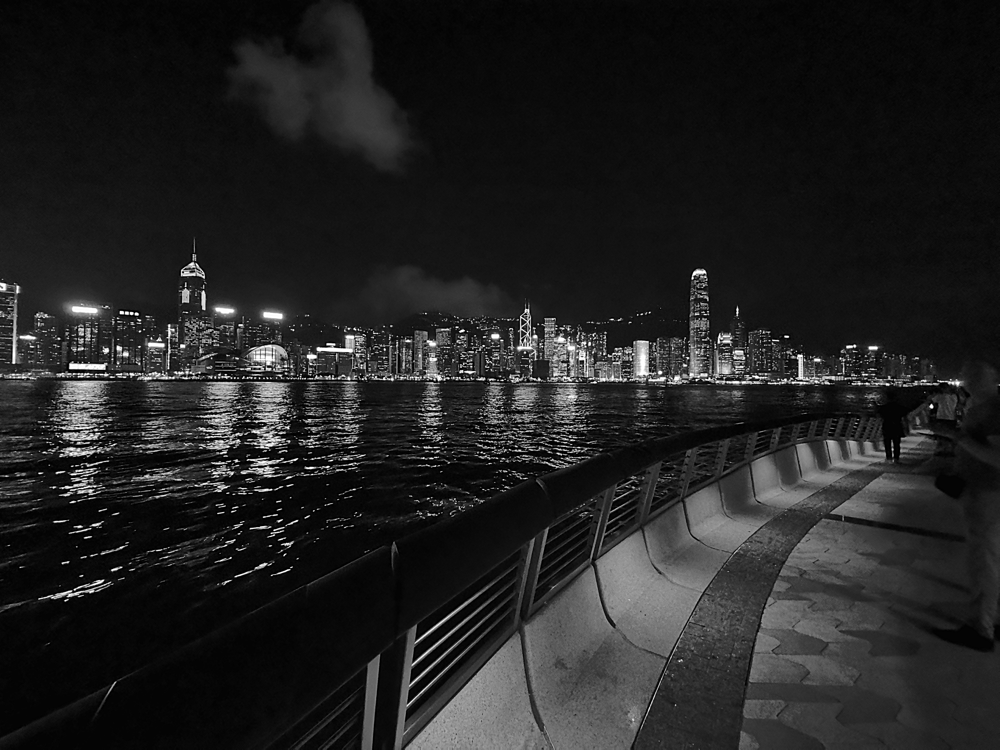

Tam Byrne
Full Stack Web Developer
(Hero Image)
诚强
I'm a full stack web developer with a passion for design who loves making highly responsive and beautifully designed apps and websites, I love creating sleek, immersive content. Outside of programming I enjoy martial arts, winemaking, learning languages, playing music and singing
Projects
Project Title
A description of the app and the tech used
Repo | Live Link
About Me
I have experience building websites and making apps primarily aimed at mobile devices but which are designed to work well on desktop too. I really love to make highly detailed, eye-catching and immersive content for users. I have many transferable skills from past areas of employment including: team and project management, high-level teamwork skills from my time as an international level yacht racer, high level admin skills, experience of working with, training and managing people from diverse backgrounds and a passion for life-long learning - whether it's new technical skills right through to new languages and instruments